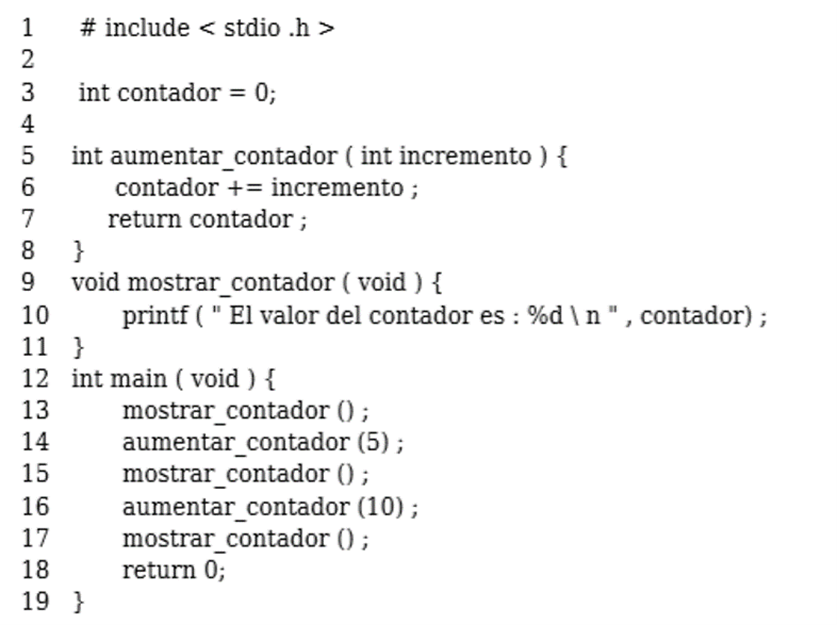

Tarea 7 - Sintaxis de Scheme
Scheme posee una sintaxis reducida comparada a otros lenguajes. Utiliza la notación prefija. Por ejemplo, si se desea realizar la suma 1+1, se debe programar la siguiente instrucción: (+ 1 1)
Los paréntesis son obligatorios, ya que separan las instrucciones que serán evaluadas por el intérprete. Para realizar comentarios dentro del código, se utiliza el ";", así se marca que toda la línea será de comentario Ejemplo:
;Esta línea es un comentario, y la orden de abajo es ejecutada
(+ 1 1)
Sintaxis Básica
- Expresion átomo | lista
- átomo número | string | identificador | caracter | boolean
- lista '('secuencia-expresión')'
- secuencia-expresión expresion-secuencia - expresión | expresión
- función (nombre_funcion argumento1 argumento2... argumento n)
Variables locales y globales
Las variables son dinámicamente tipadas. Dicho de otra forma, no se debe especificar lo que se va a guardar dentro de la misma. Las variables globales se nombran con la instrucción (define nombre valor) Por ejemplo, (define variable 5).
Por otro lado, las variables locales se definen con la instrucción ( let variables función). Por ejemplo: sumar dos números guardados en una variable local
(let ;variables de la operación ((numero1 5) (numero2 7)) ;instrucción que suma los números, es decir, la función (+ numero1 numer2))
Creando Procedimientos Completos
Utilizando la instrucción (define (nombre args) función) se crea un procedimiento dentro del programa. En mi caso, voy a implementar la instrucción del ejemplo anterior en una función
; función que suma dos números agregados como argumento
(define (suma num1 num2)
; implementación del let anterior, aunque no es estrictamente necesario
(let
;variables de la operación
((numero1 num1)
(numero2 num2))
; instrucción que suma los números, es decir, la función
(+ numero1 numero2))
De la misma manera, el procedimiento anterior pudo ser escrito de esta manera:
;segunda implementación de suma de dos números, esta vez, sin el let
(define (suma num1 num2)
(+ num1 num2))
para llamar a la función creada, se utiliza la orden (función args). Así, para llamar a nuestra función de suma, se escribe:
(suma 2 3)
Se llama con dos números, debido a que con esa cantidad de argumentos se estableció la función.
Descargar Scheme aquí
Ejemplo de Scheme:
